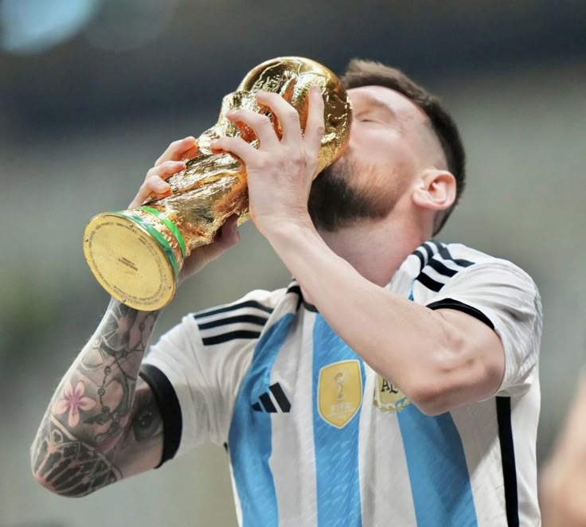

Messi.

História de vida.
História da vida do Messi.
Titúlos..
Títulos do Messi.
Influência Mundial.
Sua influência mundial.
Lionel Messi.
Lionel Messi é um dos maiores jogadores da história do futebol. Nascido em Rosário, Argentina, em 1987, ficou mundialmente conhecido por sua incrível habilidade com a bola, visão de jogo e precisão nos gols. Fez história no Barcelona, onde conquistou inúmeros títulos, incluindo quatro Ligas dos Campeões e dez Campeonatos Espanhóis. Pela Seleção Argentina, venceu a Copa América de 2021 e a tão sonhada Copa do Mundo em 2022. Ídolo global, Messi encanta torcedores com seu talento único e humildade dentro e fora dos campos.
História da vida do Messi.
Títulos do Messi.
Sua influência mundial.